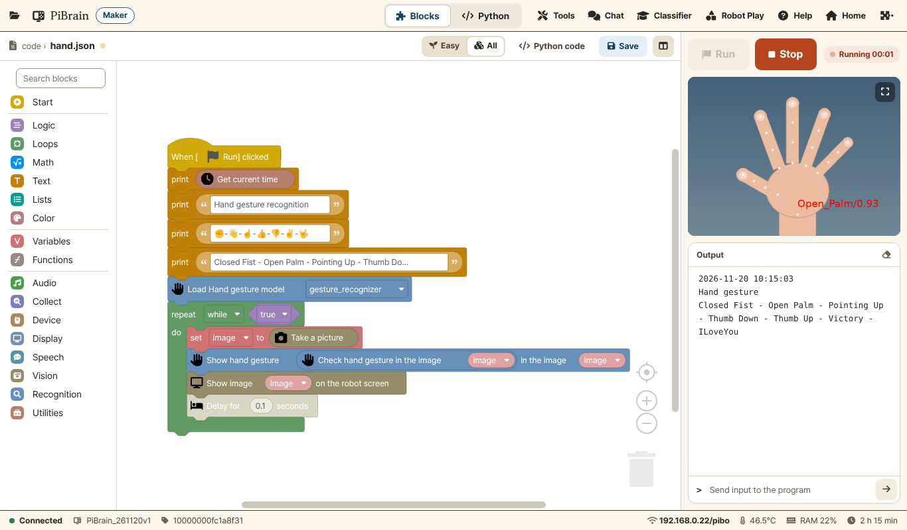
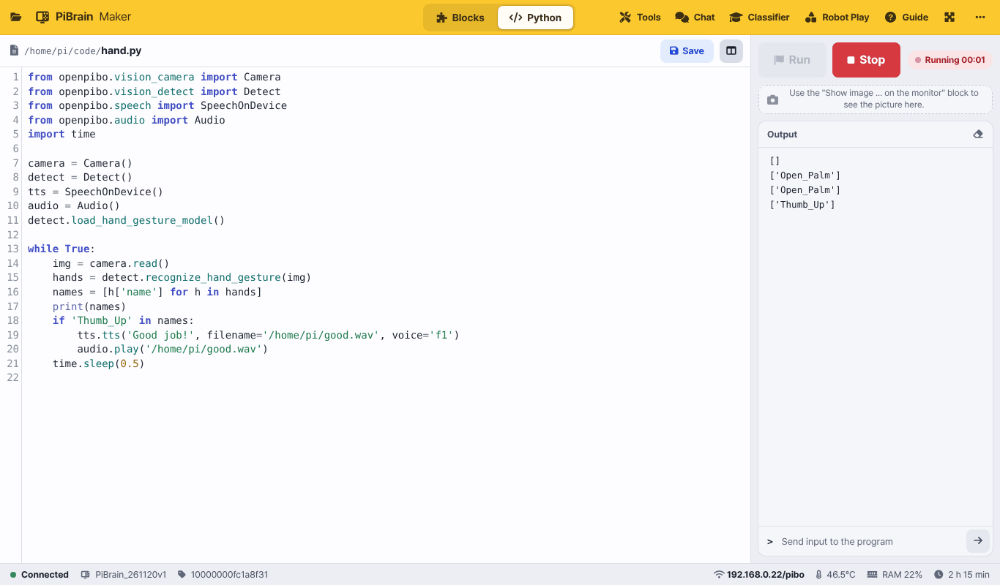
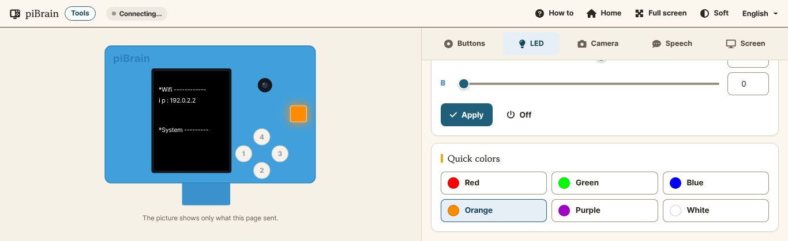
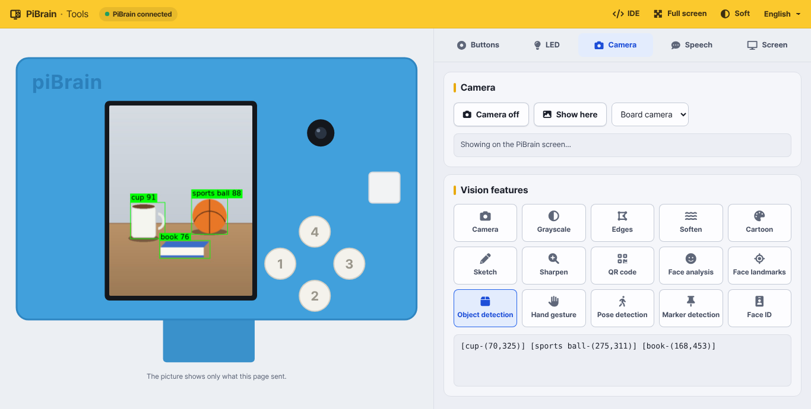
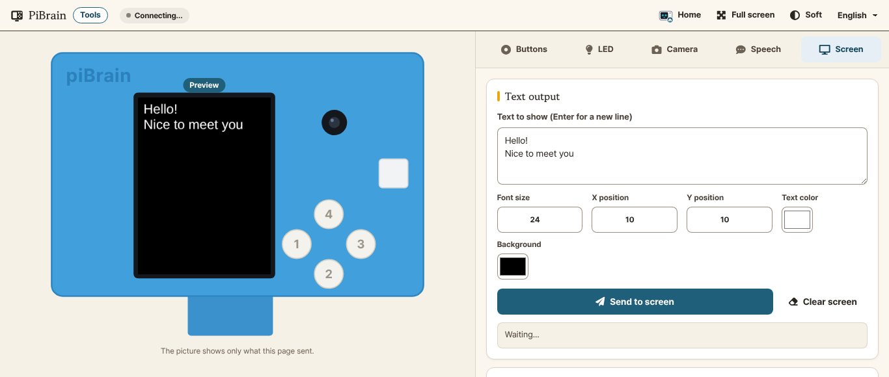
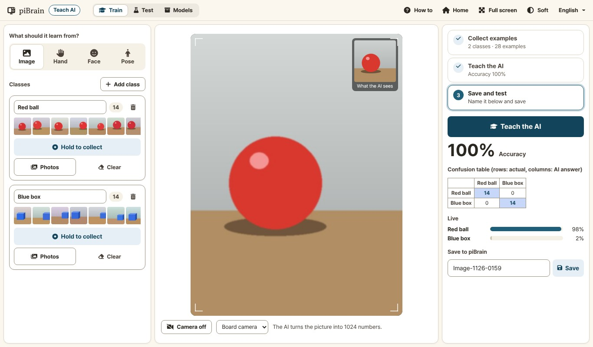

PiBrain Maker¶
PiBrain Maker is the PiBrain development environment you open in a web browser. When your tablet or laptop is on the same WiFi as PiBrain, type PiBrain’s IP address (shown on the PiBrain screen at startup) into the address bar. There is nothing to install.
The address opens the home screen (a worksheet page). Tap a big picture button to enter an app, and use [Home] (house button) in an app’s top bar to come back. Row 1 Make (Coding · Tools · Teach AI · Chat), row 2 Play & learn (Card coding · Pet), row 3 Teacher tools (Settings · Help). The app that is running now gets a red ‘Running’ stamp and the one you used last gets a yellow tag; on the right are the robot status and [Continue] (recent files, AI you taught). [Settings] has screen brightness, WiFi settings, reset robot screen, H/W check, factory reset and power off.
Screen |
What it does |
Where to open it |
|---|---|---|
IDE |
Build and run programs with blocks or Python |
|
Tools |
Try the buttons, LED, camera, voice and screen right away, without code |
Home screen, or [Tools] at the top of the IDE |
Chat |
Chat in text with the language model (LLM) running inside PiBrain |
Home screen, or [Chat] at the top of the IDE |
Classifier |
Collect examples with the camera and teach your own AI |
Home screen, or [Classifier] at the top of the IDE |
Card coding |
Elementary students teach the robot friend tricks with cards (no coding) — Challenges · Make · My tricks |
Home screen [Card coding] |
Robot Play |
Pet: look after your robot friend |
Home screen [Pet], or [Robot Play] at the top of the IDE |
Help |
This document |
Home screen, or [Help] at the top of the IDE |
Note
Everything runs inside PiBrain (voices, chat and the classifier included). Only the blocks in the [Collect] category (Wikipedia, weather, news) need the internet, and that category is only in the Korean edition.
IDE¶

Top bar: the folder button on the far left opens the file drawer. [Blocks | Python] in the middle switches the editor. On the right are Tools, Chat, Classifier, Robot Play, Help, Full screen and [⋯] More (brightness · font size · Python editor theme · language · factory reset · power off · source code and license)
File drawer: the file list, [Add] (new file / new folder / upload) and a preview for pictures and sounds. It is open at first and closes when you open a file or tap the editor. Tapping the file name in the editor bar opens it again. The icons on each file download, rename, copy or move and delete it. To copy or move, choose a folder (code · myimage · myaudio · mymodel · usb) and tap [Copy] or [Move]. It works between a USB drive and the robot too. If the name is already taken, the copy gets a new name like
name_1Start screen: before you open a file, the workspace shows [New file] · [Open an example] · [Open my file]. [Open an example] switches to blocks and opens the examples folder. Once a file is open, the editor bar shows the folder and name, like
code › hand.json(hover to see the full path)Run panel on the right: [Run] [Stop] with the run status, screen output (pictures sent with the
Show image … on the monitorblock), program output and sending input to the program. The button at the right end of the editor bar hides or shows it, and it opens again when you run a program. Hide both the drawer and the run panel to give the blocks the whole widthStatus bar at the bottom: connection · version · serial | WiFi (tap for WiFi settings) · temperature · memory · uptime
Blocks: drag blocks out of the categories on the left. Type a word such as “sound” or “face” into Search blocks at the top to find blocks. Choose [Easy] in [Easy | All] on the editor bar to see only beginner blocks (repeat forever, motions, lights, sounds, sensors, AI eyes, score and more). [Python code] shows the Python code your blocks make. See Blocks on the left for every block.
When there is an error: a red box above the output says where (the block outlined in red in block mode, or the line number in Python) and what went wrong in plain words. [Show block] / [Show line] takes you there, and the red outline goes away when you change the block

Python: the
openpibopackage gives you every PiBrain feature.printgoes to [Output] on the right andinputreads from the input box below it. See Python on the left for the APIPrograms run inside PiBrain. Press [Stop] to stop one
Tools¶
Try PiBrain’s features one at a time, without code. Pick [Buttons], [LED], [Camera], [Speech] or [Screen] in the tabs at the top right. The PiBrain picture on the left follows along: a pressed button lights up, the white square (LED) takes the LED color, and the screen shows the text you send. A [Show here] photo from [Camera] appears on the picture’s screen, a speech bubble appears over the picture while [Speech] is talking, and unsent text on the [Screen] tab shows as a preview (only what this page sent appears in the picture).
Buttons: shows live whether each of the 4 buttons is pressed

LED: pick a color and press [Apply] to light the LED in that color

Camera: press [Camera on] to show the camera view on the PiBrain screen. Tap a vision feature (grayscale, edges, cartoon, QR code, face analysis, object detection, hand gestures, pose, markers…) to apply it to the PiBrain screen right away; the result appears as text at the bottom right. Face ID recognizes faces you have named and [Registered] (programs can use them too, with the
Load the face dictionary from code facedbblock). [Show here] shows the current view in the browser too. If a USB camera is plugged in, switch between the board camera and USB cameras in the picker next to [Show here] (any USB camera that supports V4L2)Speech: pick one of ten voices (Male 1–5, Female 1–5) or the robot voice (espeak, English text only) and press [Speak] to let PiBrain say your text. Korean and English are detected automatically

Screen: choose the text, size, position and color and show it on the screen (LCD, 240×320). [Home screen] goes back to the first screen with the IP address
Classifier¶

Collect examples with the camera and teach the AI, for example “this is a cat, this is food”. The PiBrain camera is portrait (3:4), so the view is portrait too.
Training steps at the top of the right panel (① Collect examples → ② Teach the AI → ③ Save and test) outline the step to do now in blue and check off finished steps.
What should it learn from? — Image (the whole picture) · Hand (hand shape) · Face (expression) · Pose (body posture)
Name each class and keep pressing [Hold to collect] to collect examples. You can also upload files with [Photos]. The picker under the camera switches to a USB camera — use the same camera for training and for use for better results
[Teach the AI] — the tablet or laptop browser learns in a few seconds and shows the accuracy, a confusion table and live scores
[Save] — saved on PiBrain in
/home/pi/mymodel/<model name>In the IDE use
Load classification model (mymodel) (model name)→Classify image (image) with the classification model.Show the classification result on image (image)draws the hand, face or body points and the class name on the picture
The [Test] tab tries a saved model again. [Models] lets you test, keep training, rename, download (zip) or delete a model.
Tip
The classifier downloads its AI files (about 10 MB) the first time it opens. Open it once on every tablet before class and it will start right away during class.
Chat¶
Chat in text with the language model (LLM) that runs inside PiBrain. Choose a model from the model cards on the start screen (or [Chat model] at the top), and the model loads then (the first time takes several tens of seconds). Changing the model starts the chat over.
Model |
What it is |
|---|---|
General |
Chats in Korean and English. No tools |
TheMaker KO |
A Korean model trained to talk with students. You can ask PiBrain to do things (tools below) |
TheMaker EN |
The English version of TheMaker. If the model file is not on the robot, it shows “(not installed)” and can’t be chosen |
TheMaker listens and chooses a tool by itself. The tool it ran appears in small text under the answer (for example Light red).
Tool |
Try saying |
What it does |
|---|---|---|
Light |
“Turn on the red light”, “Turn off the light” |
Changes or turns off the LED (red, orange, yellow, green, blue, sky blue, purple, pink, white) |
Look |
“What do you see?” |
Looks with the camera and says what it sees |
Move |
“Say hello”, “Can you dance?” |
Has no body, so it answers that it can’t move |
Say “Let’s just talk” to stop using tools, and “You can move now” to use them again.
Turn on [Speak out loud] and PiBrain speaks the answer (you can choose the voice and volume).
Programs can use it too, with the Choose chat model, Start LLM server and Say … to AI blocks in [Speech].
Blocks chat in text only and do not run tools.
Note
Tools, Chat, Classifier, Card coding/Robot Play and H/W check run one at a time. Opening one closes the others, and running a program in the IDE closes them too (they share the camera, speaker and memory). A closed screen shows [Restart].